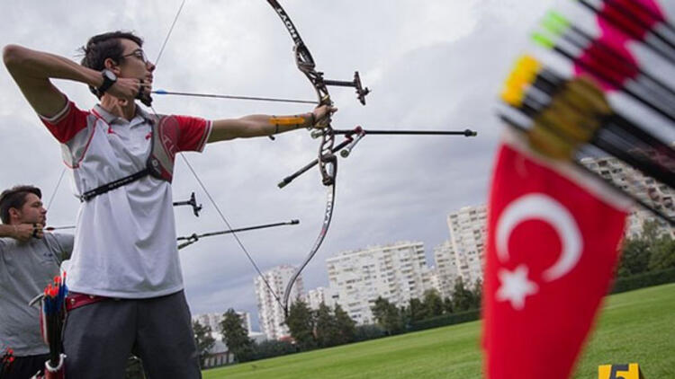
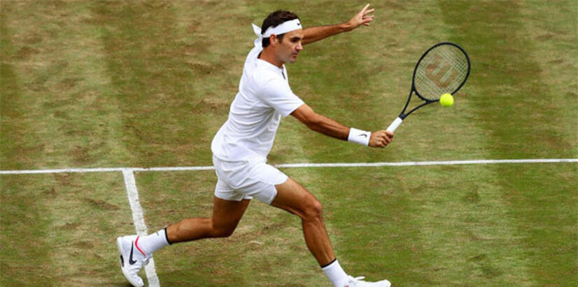
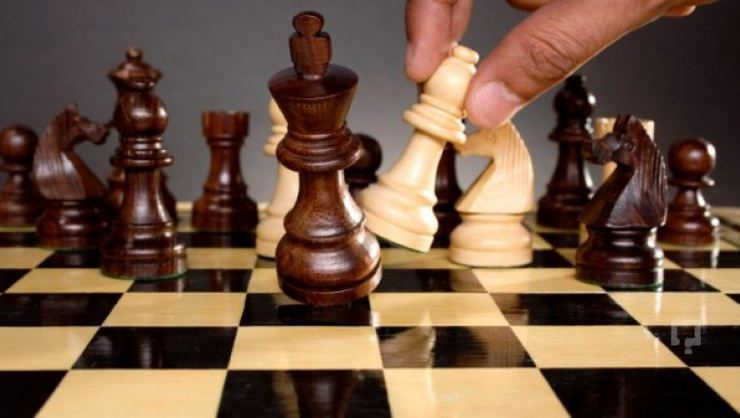
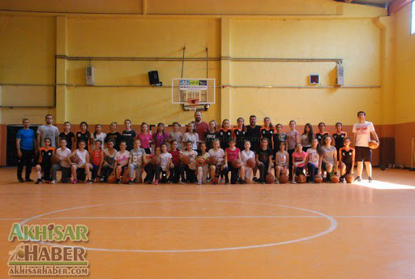

HAKKIMDA
|
Küçüklüğümde Okçuluk ile ilgilendim, bir süre gittikten sonra
sıkıldım ve turnuvalara katılmadan bıraktım.
|
 |
Ortaokulda 3 yıl gitar kursuna gittim, bir kez konser verdik(küçük bir grup olarak)
sonra gitar ile ilgilenmeyi bıraktım ve yavaş yavaş unuttum.
|
 |
Gitar çaldığım sıralarda spor olarak bir şeyler yapma umuduyla tenis kursuna gittim.
Ancak hocanın adaletsiz davrandığını düşündüğüm için sinirlenip kursu bıraktım.
|
 |
İlkokul ve ortaokul zamanlarında satranç klubüne katılmıştım. Klüp içerisindeki küçük
turnuvalarda oynadım ancak ilçe geneli vs. turnuvalara katılmadım.
|
 |
Yine ortaokulda tenisten önce basketbol ile ilgilendim ve bir süreliğine şehrimin
basketbol altyapı takımında oynadım. 1 yıllığına takımdan ayrıldım, sonra geri dönmek istedim
ancak formumu kaybettiğim için seçmeleri geçemedim.
|
 |
Okula başlamadan önce bile bilgisayarla ilgileniyordum ve bu ilgim zamanla artmaya başladı
özellikle ortaokulun sonlarına doğru iyice bilgisayar tutkunu oldum ve oyunları daha sık oynamaya başladım.
Lisede zamanımın büyük bir çoğunluğunu bilgisayara ayırdım ve iyi başladığım çalışma tempomu kaybettim.
Bu senenin başında yaptığım dereceyi bir daha yapamama sebep oldu ve üniversite sınavından kötü bir derece yaptım.
|
|